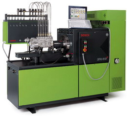
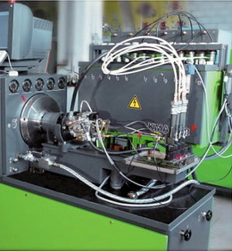
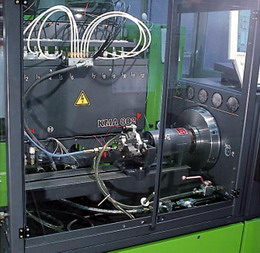
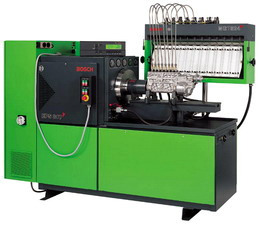

A Bosch új típusú próbapadja 1997-ben mutatkozott be először. Akárcsak a Hartridge-nél ki kellett fejleszteni azt az új próbapadot melynek működtetése közvetlen PC felügyelettel irányítható.
A próbapad 7, 5 és 15 KW teljesítményű közvetlen villanymotoros meghajtással rendelkezik.
Ha magát a próbapadot megrendeljük az még mérőrendszerrel nem rendelkezik. Modul elven építhető fel a kívánt műszaki fejlettségű próbapad. 2 fajta mérőrendszerrel is felszerelhető: a hagyományos mérőüvegekkel valamint a folyamatos mennyiségmérő KMA rendszerrel.
A mérőüveges MGT rendszer külön egyedi vezérlődobozzal működik, de a fordulatszám már programozható. Különböző nagyságú mérőüvegekkel rendelhető attól függően, hogy milyen adagolók mérésére kívánjuk majd használni.
A KMA folyamatos mérőrendszer 2 db átfolyás-mérő egységgel működik. Egy mágnesszelep rendszer egymás után felváltva csatlakoztat mindig két mérőporlasztó helyet a két átfolyás-mérőhöz. Addig a többi mérőhely értékét kimerevítve mutatja a képernyő. Éppen ezért a mennyiségmérést többször átfuttatva kell megismételnie a programnak, hogy a kapott érték megfeleljen a nagypontosságú mérésnek.
Az EPS 815-ös próbapad, KMA folyamatos mennyiségmérő-rendszerrel fejleszthető tovább Common Rail, illetve VP típusú elosztórendszerű adagolók vizsgálatára, valamint Cr porlasztók vizsgálatára. Ez utóbbi vizsgálatához csatlakoztatni kell a próbapadhoz még egy mérőolaj hűtőberendezést is, mert a nagynyomású rendszerek intenzíven túlforrósítják a mérőolajat.
Mivel a próbapadot nem könnyű átszerelni, jól el kell dönteni a vásárláskor, hogy mire kívánjuk leginkább használni.
A próbapad számítógépére feltelepített - kódolt - Bosch program segítéségével lehet csak az új típusú befecskendező rendszerek ellenőrzése. Ez a számítógépes program a VP adagolók esetén csaknem teljesen automatikusan működteti a próbapadot. A program lefutatásakor a mért egyedi jellegmezőt programozza fel az adagoló vezérlőegységébe.
EPS 815 próbapad KMA 802 számitógépes menyiségmérő rendszerrel: adagolók vizsgálatára 12 hengerig
VPM 844 vizsgáló készlet: mágnesszeleppel vezérelt Bosch elosztórendszerü adagolók beszabályozására
CRS 845 vizsgálókészlet: Bosch Common Rail nagynyomású szivattyúk vizsgálatára, beszabályozására
EPS 807 próbapad MGT üveges mérőrendszerrel: adagolók vizsgálatára, beszabályozására